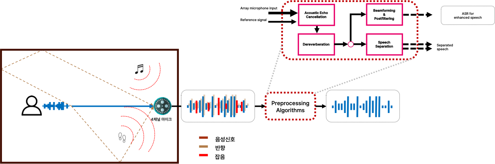
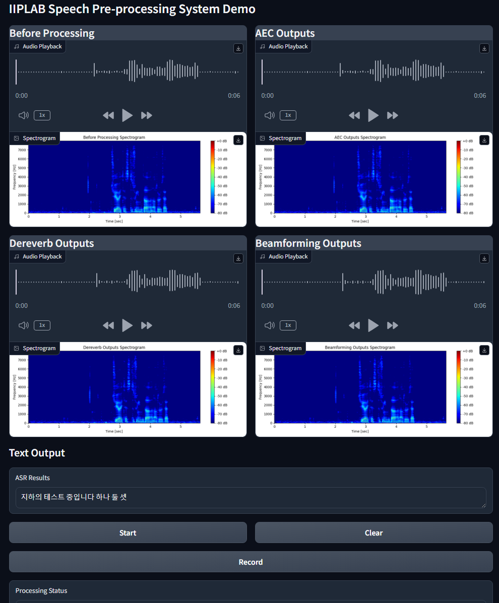

Multi-Channel Audio Preprocessing
Task Describtion
Developing multi-channel preprocessing technology for noisy and echo-prone kiosk environments, focusing on echo cancellation and beamforming techniques.
Background
In noisy and echo-laden environments like kiosks, it is difficult to accurately process speech signals for proper recognition and direction detection.
Proposed Solution

- System: Created an integrated system that combines echo cancellation, reverberation removal, and mask-based beamforming.
- Echo Cancellation: Implemented a Weighted Prediction Error (WPE) algorithm for multi-channel echo cancellation.
- Beamforming: Applied a Coherence-to-Diffuse Ratio (CDR) mask for beamforming to enhance directional signal processing.
Outcome

The system is currently under development with collaboration from NCSoft, focusing on deployment in kiosk environments.
My Contributions
- Developed the echo cancellation and beamforming algorithms.
- Ported the system to C++ for deployment in real-world kiosk environments.